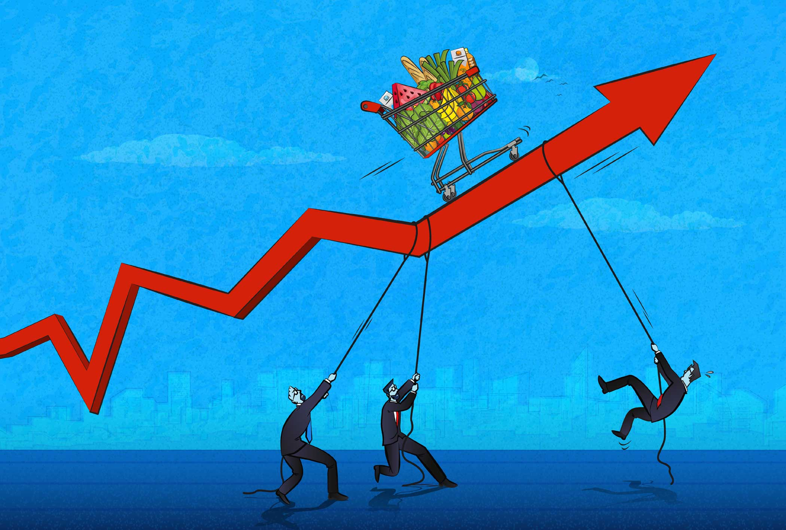
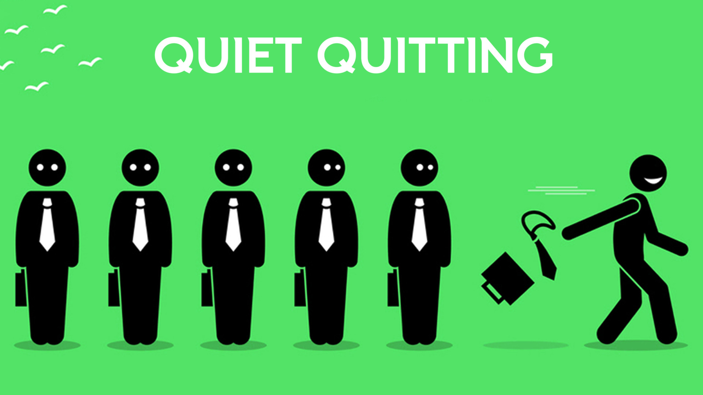
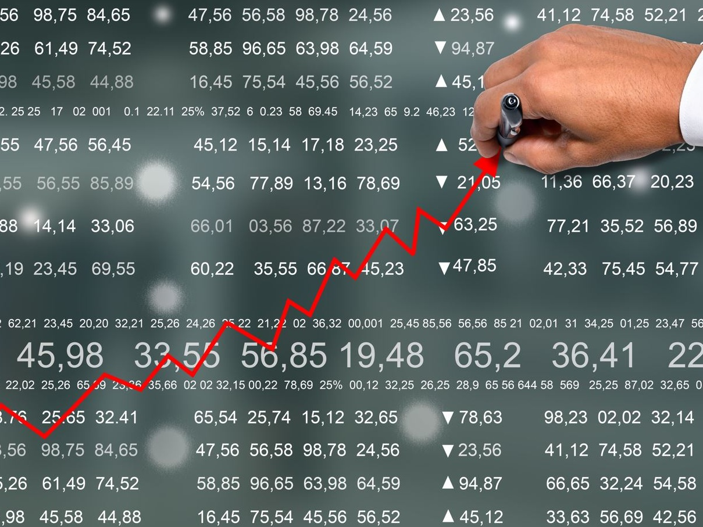

Business

Finanza
Analisi: Le borse europee aprono in rialzo

Startup
Come questa nuova app sta rivoluzionando il lavoro ibrido

Immobiliare
Il mercato immobiliare rallenta: cosa aspettarsi

Economia Globale
Nuovi dati sull'inflazione sorprendono gli analisti

Lavoro
Il "quiet quitting" è ancora un trend? Parla l'esperto

Mercati Asiatici